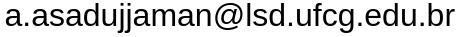

About
A S M Asadujjaman is currently a researcher at the Federal University of Campina Grande (UFCG) 🇧🇷. Previously he obtained his PhD in Information Systems Engineering with the Audit Ready Cloud (ARC) group from Concordia University 🇨🇦 and MSc in Information and Communication Technology from Bangladesh University of Engineering and Technology (BUET) 🇧🇩. His current research is in IT security.
Publications
| [1] A S M Asadujjaman, Eduardo Falcão, Andrey Brito, Elisa Rojas. Surviving Zero-day Attacks Using Spatial Specialization. Computers & Security (WoS/Scopus: Q1, IF: 5.4), Elsevier, 2025 (Accepted). |
| [2] A S M Asadujjaman, Davi Pontes, Eduardo Falcão, Andrey Brito. Securing Confidential VMs in Public Clouds. In 15th IEEE CloudCom, IEEE, 2024. Presentation |
| [3] Davi Pontes, Fernando Silva, Anderson Melo, Carlos Pamplona Filho, A S M Asadujjaman, Eduardo Falcão, Andrey Brito. Multi-Platform and Vault-Free Attestation of Confidential VMs. ACM, 2024. |
| [4] Momen Oqaily, Suryadipta Majumdar, Lingyu Wang, Mohammad Ekramul Kabir, Yosr Jarraya, ASM Asadujjaman, Makan Pourzandi, Mourad Debbabi. A tenant-based two-stage approach to auditing the integrity of virtual network function chains hosted on third-party clouds ACM CODASPY, 2023. |
| [5] A S M Asadujjaman et al. 5GFIVer: Functional Integrity Verification for 5G Cloud-native Network Functions. IEEE CloudCom, 2022. |
| [6] A S M Asadujjaman et al. APPD: A Blackbox Approach to Verifying NFV Integrity. IEEE CNS, 2021. |
| [7] D. Lopez-Pajares et al., A S M Asadujjaman. Amaru: Plug & Play Resilient In-band Control for SDN. IEEE Access (WoS/Scopus: Q1, IF: 3.6), 2019. |
| [8] A S M Asadujjaman et al. Fast Control Channel Recovery for Resilient In-band OpenFlow Networks. IEEE NetSoft, 2018. |
| [9] A S M Asadujjaman. Enhancement of Ethernet Ring Protection Switching Protocol, 2017. |
| [10] T K Roy, M A Mahmud, A S M Asadujjaman, et al. Fiber Optic Link Design for Multilink Systems. |
| [11] A S M Asadujjaman et al. FCSEA: A Floodless Carrier-grade Scalable Ethernet Architecture. IEEE ICECE, 2016. |
| [12] A S M Asadujjaman et al. Optimization of Ethernet Ring Protection Switching for Adaptive Modulation. IEEE ICCIT, 2016. |
Experience
- Lead Engineer, Banglalink Digital Communications Ltd., Dhaka, Bangladesh.
- Teaching (POD), INSE 6130 (Fall 2021), Concordia University, Canada.
Professional Activities
- Conference Organizer: ISSRE'25
- Journal Reviewer: Springer Annals of Telecommunications, Elsevier Computer Networks, IEEE TDSC
- Conference Reviewer: ESORICS'21
Contact
Address
Laboratório de Sistemas Distribuidos, Universidade Federal de Campina Grande
Campina Grande - PB, 58429-900, Brazil
Email
